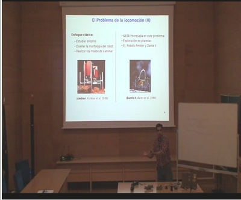

Están disponibles los vídeos de la charla “Robótica Modular y Locomoción” que impartí en Mayo de 2009 en la URJC dentro del máster de Sistemas Telemáticos e Informáticos. En total, tiene una duración de unos 80 minutos.
VÃdeo. Parte 1/2
VÃdeo. Parte 2/2
Las transparencias están disponibles en este enlace. Y también están en línea en scribd: